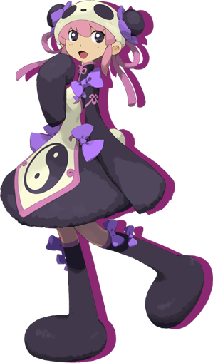
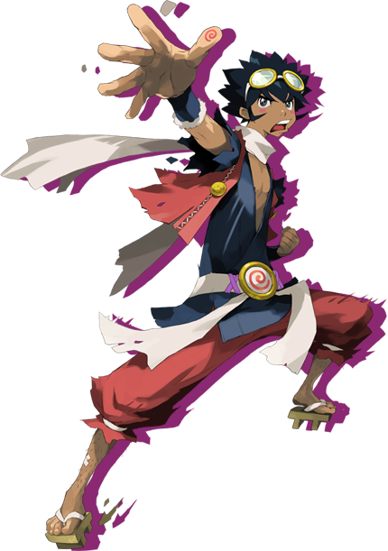
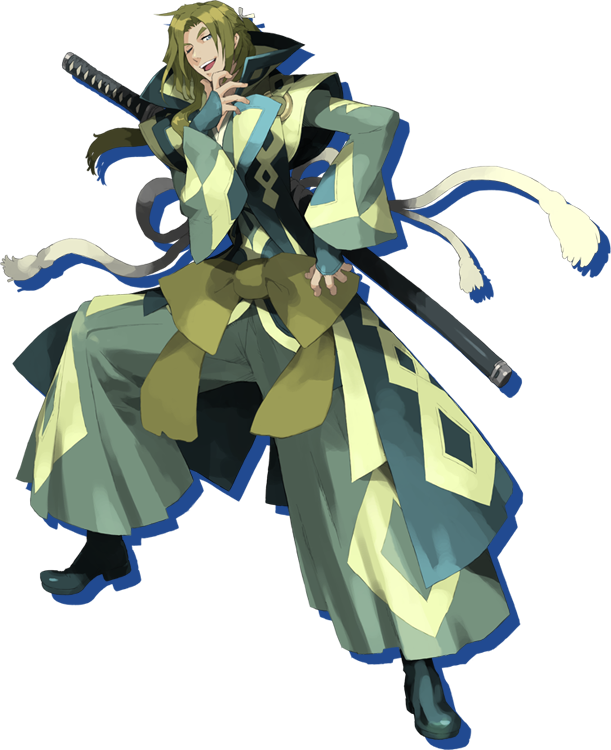
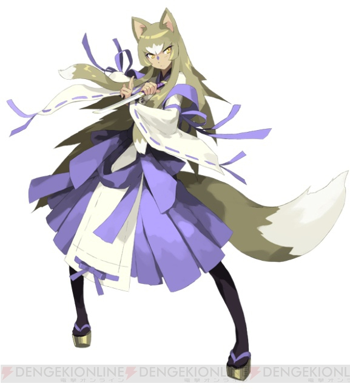
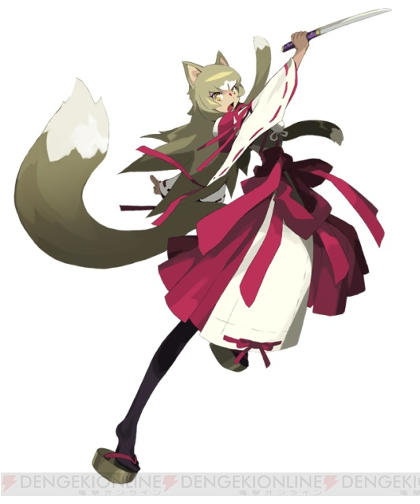
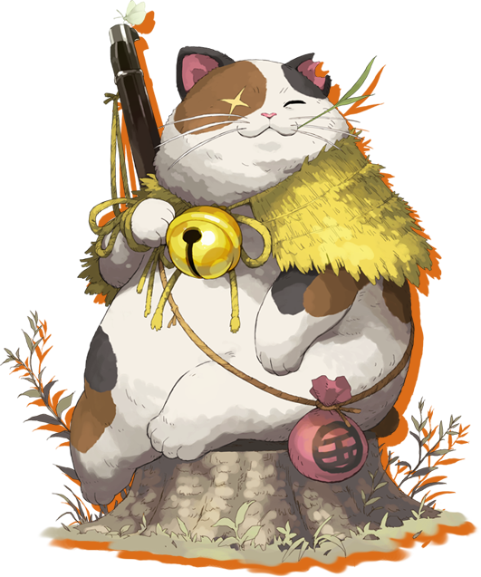

Allies
Text
Mechanics
- Text
Ally List
Tao

- Technical character that offers a mix of ranged offense and support.
- She appears at the entrance to Tower of Fortune as part of the story,
and you're given the option to hire her as a guide for 1500G.
(If you decline, she'll raise the price to 2000G) - She also appears at the Beginner House in Inori Village after clearing the main story.
- Prioritizes following Shiren at all times.
- If Shiren is in view, and she isn't adjacent to him, she'll move toward him.
- If she's adjacent to Shiren, and an active enemy is in range, she'll attack.
- Her special attack is a boomerang throw that deals fixed damage from a distance.
- It can hit enemies up to 8 tiles away, and she uses it 50% of the time if an enemy is in range.
- The boomerang follows a square path, and pierces through walls and characters.
- Damage dealt is equal to half of her max HP. (example: 50HP at level 1, so 25 damage)
- It hits monsters like Cavel Mamel, Gitan Mamel, Mixer, Bored Kappa, Flamebird, and Sweet Nut for full damage.
- She won't throw the boomerang at night.
- She'll offer to sell you an item at 5 times the regular price if you talk to her when you're in need of help.
- If you have cursed or sealed items → Exorcism Scroll (1500G)
- If your strength has been lowered → Antidote Grass (500G)
- If your fullness is at 0 → Onigiri (500G)
- If it's night → Fine Torch (800G)
- If it's night and you've used all abilities → Replenish Scroll (3000G)
- Note: You can only buy one type of item per floor, but can buy the same item multiple times.
Jirokichi

- Highest HP among all allies, and levels up quickly.
- He automatically joins you when you enter one of the three dice towers after Destiny Trail.
(From that point on, he's a mandatory ally until you clear the main story) - Permanently becomes unavailable as an ally after you clear the main story.
- Prioritizes following Shiren at all times.
- If Shiren is in view, and he isn't adjacent to him, he'll move toward him.
- If he's adjacent to Shiren, and an active enemy is in range, he'll attack.
- He transforms into a gravestone when he collapses.
- You can't progress to the next floor when he's in this state.
(You'll be returned to Nekomaneki Village with all of your items if you try to advance) - Revive him by throwing a healing grass item or a Heal Pot at his gravestone.
- Note: You can still progress if he's a gravestone at the time you defeat a boss.
- You can't progress to the next floor when he's in this state.
- If you collapse while Jirokichi is still alive, he'll keep your equipment for you.
Kojirouta

- High HP and attack from the start.
- Talk to him inside the rich man's house in Inori Village, and become his servant.
- He'll then join you the next time you collapse in Destiny Trail or any of the dice towers.
- The event won't occur if you have an Undo Grass or Revival Grass.
- He also won't show up if you already have a full party.
- This event can be skipped by clearing the main story instead of collapsing.
- He's located inside the rich man's house in Inori Village.
- Prioritizes rushing at enemies unless it's night or he has low HP.
- If an active enemey is in the room, he'll move toward it regardless of being adjacent to Shiren.
- His special attack is throwing Gitan to deal fixed damage to a single target.
- The Gitan always hits, and isn't subtracted from Shiren's Gitan total.
- Range increases as he levels up, and he uses it 50% of the time if an enemy is in range.
(Lv1-10: 1 tile, Lv11-30: 3 tiles, Lv31-50: 5 tiles, Lv51-70: 7 tiles, Lv71-99: 9 tiles) - The Gitan can hit targets on the other side of walls, or even inside walls.
- Damage dealt is equal to half of his max HP. (example: 50HP at level 1, so 25 damage)
- Hits monsters like Cavel Mamel, Gitan Mamel, Mixer, Bored Kappa, Flamebird, and Sweet Nut for full damage.
- Heals Froggo monsters, so he's at risk of being defeated by nearby monsters if a Froggo is present.
- He won't throw Gitan at night.
- He occasionally wanders off and leaves the party when you advance to the next floor.
- He'll always leave the party if you use the Sparrow Transport.
- He'll also leave if you reach 14F of Tower of Fortune with Tao present after clearing the main story.
- It seems he no longer wanders off once you clear both Tao and Kojirouta's post-game stories.
Okon

- Low HP and collapses extremely easily, but offers a mix of debuffs and support.
- Joins you as an ally in Nekomaneki Village after you rescue a trapped fox in a dungeon.
- She's located near Ponta's Lot Shop in the basement of Hotel Nekomaneki.
- Prioritizes following Shiren at all times.
- If Shiren is in view, and she isn't adjacent to him, she'll move toward him.
- If she's adjacent to Shiren, and an active enemy is in range, she'll attack.
- She can transform into a monster and use its special attack.
- She starts with Blade Bee, and learns more transformations as she levels up.
- She'll always use a transformation attack if the situation allows for it.
(example: Gazer if she's adjacent to an enemy that doesn't have a status condition) - You can enable or disable individual transformations by talking to her.
- Generally, it's dangerous for her to have many transformations enabled at the same time
since she collapses so easily - the AI might choose to use an attacking transormation
instead of a transformation that disables an adjacent enemy. - If you're worried, it's best to only leave Naptapir (or Gazer) enabled for general play,
and toggle other transformations for one turn as needed.
- Generally, it's dangerous for her to have many transformations enabled at the same time
- Blade Bee is her main method to deal with Gyazas and Absorbiphants.
- Gazer is necessary to win (or even survive) 1-vs-1 fights until she learns Naptapir.
- Moseal should be disabled at all times, since it places her away from Shiren.
- DJ Mage can be handy to avoid fights at night or in single-room Monster Houses.
- Curse Girl should be disabled at all times, since Okon will easily collapse if she's attacked.
- Scoopie is excellent at disabling enemies in rooms, though note that it can miss.
- Grass Boy is a decent long range option, but enemies can level up if she throws Rage Grass.
- Absorbiphant offers fantastic support for Shiren, and greatly increases Okon's offense.
- Naptapir should be enabled at all times, since it completely shuts down most enemies.
- Flamebird should be used to restore HP after a fight, rather than enabling it while fighting.
| Level | Monster | Effect |
|---|---|---|
| 1 | Blade Bee | Retreat 1 tile after attacking. |
| 5 | Gazer | Inflicts Confused status to a monster in front. |
| 9 | Moseal | Body slams a monster either to the north or south. |
| 14 | DJ Mage | Fires a magic bullet in a straight line that either knocks a target back, or warps them to a different location on the same floor. |
| 20 | Curse Girl | Inflicts Sealed status to a monster in front. |
| 27 | Scoopie | Inflicts Blind status from a distance. However, it can miss, and Flamebirds burn the dirt on contact. |
| 35 | Grass Boy | Throws a random grass with piercing properties. It can miss, and it won't hit Shiren if he's visible to Okon. |
| 44 | Absorbiphant | Cures ailments for allies, and erases enemy auras and positive effects. Okon's HP will be fully restored, and she'll gain the Buffed status. |
| 54 | Naptapir | Infclits Asleep status to all monsters within a 1 tile radius. |
| 65 | Flamebird | Restores 30 HP when Shiren, an ally, or Okon has Danger status. |
Koharu

- Text
Gen

- Text
Sage / Sparrow
- Text